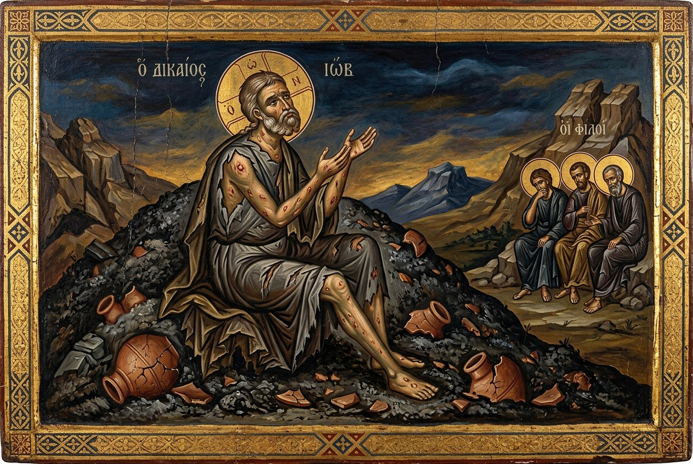
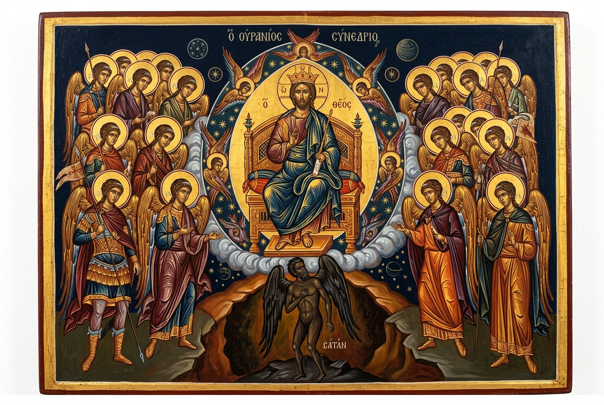
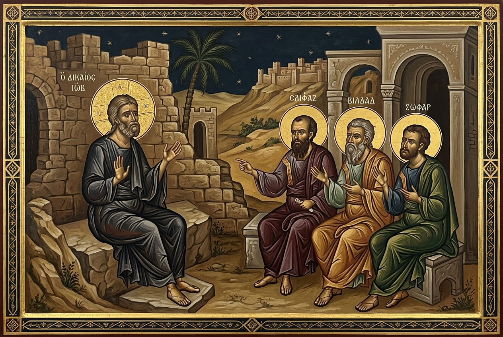
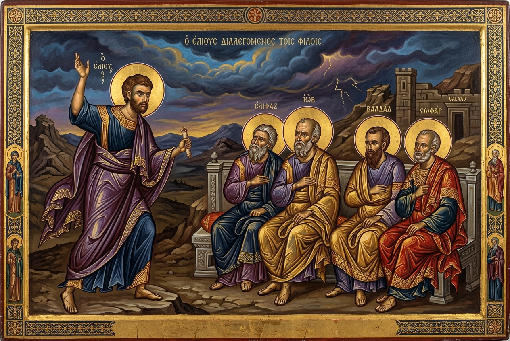
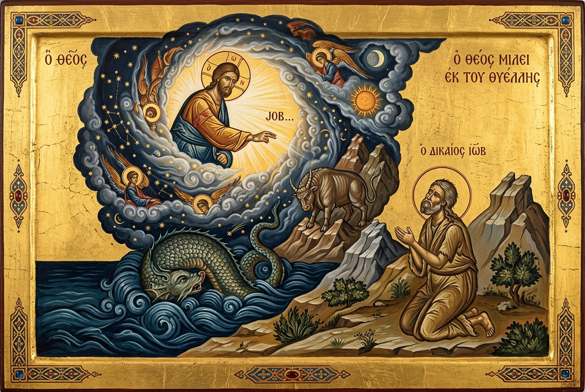
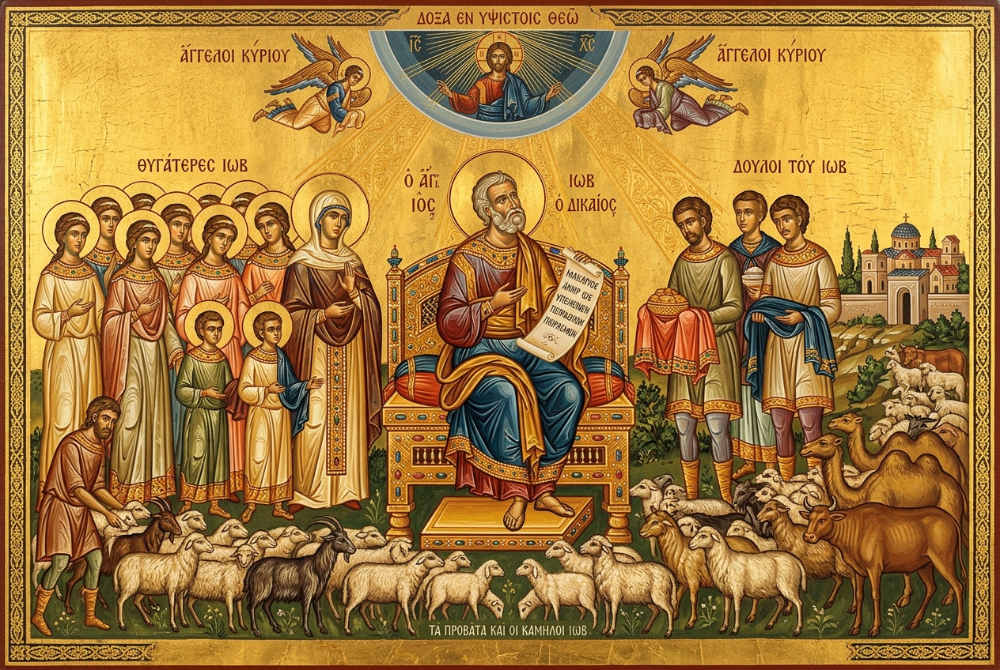

A profound exploration of innocent suffering, theodicy, and divine sovereignty. The Book of Job challenges us to trust in God's wisdom even when His purposes remain veiled, culminating in an encounter with the Almighty rather than mere explanations.
Satan's Challenge & Job's Suffering
First Cycle of Speeches
Second Cycle of Speeches
Third Cycle & Job's Final Defence
The Fourth Voice Intervenes
God Speaks from the Whirlwind
Repentance & Restoration
The Story of Job

Job 1:1–5
A blameless and upright man from the land of Uz, who feared God and shunned evil. The greatest of all the people of the East — blessed with seven sons, three daughters, and vast herds.
c. Patriarchal Era
Job 1:6–2:10
The sons of God present themselves before the LORD, and Satan among them. God permits Satan to test Job — first his possessions, then his health. Job refuses to curse God: "The LORD gave, and the LORD has taken away; blessed be the name of the LORD."
The Divine Wager
Job 3–31
Three rounds of speeches between Job and his friends Eliphaz, Bildad, and Zophar. The friends insist suffering proves guilt; Job maintains his innocence and demands an audience with God. In the midst of agony, Job declares: "I know that my Redeemer lives."
The Dialogue Cycles
Job 32–37
A young man named Elihu, who has waited in silence, now speaks with passionate conviction. He rebukes both Job and his friends, offering a new perspective: suffering can be disciplinary and redemptive, not merely punitive. He points toward God's imminent self-revelation.
The Fourth Voice
Job 38–41
"Where were you when I laid the foundations of the earth?" God speaks — not with explanations, but with overwhelming questions about creation, the cosmos, and the mighty creatures Behemoth and Leviathan. The answer to suffering is not information but divine encounter.
The Divine Answer
Job 42
"I have heard of You by the hearing of the ear, but now my eye sees You." Job repents, intercedes for his friends, and God restores him double — 14,000 sheep, 6,000 camels, seven sons, three daughters. He lives 140 more years and sees four generations.
Restoration & BlessingGod asks Job where he was when the foundations of the earth were laid, affirming God's unfathomable wisdom and power.
A majestic view of the cosmos, when the morning stars sang together and angels rejoiced at God's handiwork.
Behemoth and Leviathan reveal God's absolute mastery over the mightiest beasts, symbolizing His ultimate victory over evil.
| Innocent Suffering | Ch. 1-2 |
|---|---|
| Theodicy | Ch. 3-31 |
| Divine Sovereignty | Ch. 38-41 |
| The Redeemer | Ch. 19 |
| Wisdom | Ch. 28 |
| Restoration | Ch. 42 |
| Intercession | Ch. 42 |